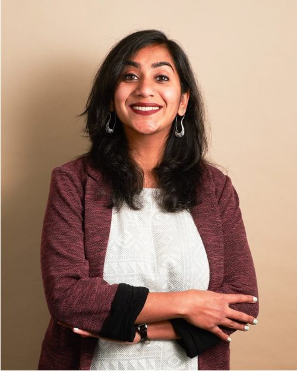

Hello. I'm a science reporter, formerly at the Wall Street Journal.
I've spent over a decade in national newsrooms delivering scoops and enterprise stories on science and health. At the Journal, I covered science through the lens of money and power, tracking the conflicts that arise when politicians or interest groups use the tools of research to advance their agendas. Recently this meant tracking the Trump administration's cuts at NIH and health agencies, as universities scrambled to replace federal dollars and public health groups led legal fights. I've also written extensively about the internal crisis of fraudulent science confounding researchers and scientific institutes.
Previously, I was a senior reporter at Nature, covering the NIH and biomedical research, and before that a science reporter at BuzzFeed News, The Boston Globe, and NBCNews.com.
I'm open to learning about new opportunities. Email is the best way to reach me: nidhi.subbaraman@protonmail.com